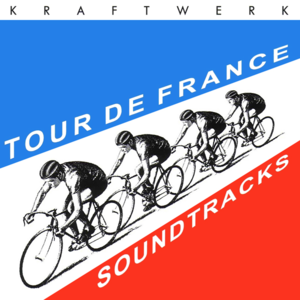

Having looked at hiking trails in Washington state and bridges in Maryland I poked around the #TidyTuesday repo and saw this trove of data from back in April on The Tour de France. I love this race, I cycle for exercise, and I love the Kraftwerk album, so of course I had to dig in.

So I don’t bury the lede, this is a two-part post. Why? Because there was a lot of data munging & cleaning needed to get the data into shape for whart I wanted to do. So this post is all about what I needed to do on that end. The analysis post will come soon. Also, I’m trying to work out how to do a code show/hide thing in hugo academic so bear with me that the code takes up lots of pixels.
So let’s dig in…first we’ll load packages and create a ’%notin% operator…
# load packages
library(tidytuesdayR) # to load tidytuesday data
library(tidyverse) # to do tidyverse things
library(tidylog) # to get a log of what's happening to the data
library(tdf) # to get original stage results file
# create notin operator to help with cleaning & analysis
`%notin%` <- negate(`%in%`)There’s a ton of data here, sourced from the tdf package from Alastair Rushworth and (Thomas Camminady’s data set) (https://github.com/camminady/LeTourDataSet), via Kaggle
There are three distinct sets to work thru, each going back to the first run of the race in 1903:
* A dataframe of overall (General Classification, or Yellow Jersey / maillot jaune) winners from 1903 to 2019 comes from the Tidy Tuesday frame.
* A dataframe with stage winners for races 1903 to 2017, also in the Tidy Tuesday set, sourced from Kaggle.
* A frame of overall stage results, sourced from the tdf pacakge due to issues with date conversion in the data included in the Tidy Tuesday set.
The stage winner set needs a bit of mungung…I created a stage_results_id column similar to the one in the stage results set. But it needs leading zeros for stages 1-9 so it sorts properly.
I then got it in my head I wanted results through 2020, so I grabbed them from wikipedia; but the hard way, with copy-paste since my scraping skills aren’t there & I just wanted it done. Data is uploaded to my github repo if you want to use it. (yes, it’s in an excel file…)
# load main file from tt repo
tt_tdf <- tidytuesdayR::tt_load('2020-04-07')##
## Downloading file 1 of 3: `stage_data.csv`
## Downloading file 2 of 3: `tdf_stages.csv`
## Downloading file 3 of 3: `tdf_winners.csv`# create race winners set. comes from tdf package. includes up to 2019
tdf_winners <- as_tibble(tt_tdf$tdf_winners)
# create stage winner set. in tt file, comes from kaggle, includes up to 2017
tdf_stagewin1 <- tt_tdf$tdf_stages %>%
mutate_if(is.character, str_trim)
# pulled 2018 - 2020 from wikipedia
# read in excel - need to separate route field to Origin & Destination
tdf_stagewin2 <- readxl::read_excel("data/tdf_stagewinners_2018-20.xlsx") %>%
mutate(Stage = as.character(Stage)) %>%
mutate(Date = lubridate::as_date(Date)) %>%
separate(Course, c("Origin", "Destination"), "to", extra = "merge") %>%
mutate_if(is.character, str_trim) %>%
select(Stage, Date, Distance, Origin, Destination, Type, Winner, Winner_Country = Winner_country)
# join with rbind (since I made sure to put 2018-2020 data in same shape as tt set)
# clean up a bit
tdf_stagewin <- rbind(tdf_stagewin1, tdf_stagewin2) %>%
mutate(race_year = lubridate::year(Date)) %>%
mutate(Stage = ifelse(Stage == "P", "0", Stage)) %>%
mutate(stage_ltr = case_when(str_detect(Stage, "a") ~ "a",
str_detect(Stage, "b") ~ "b",
str_detect(Stage, "c") ~ "c",
TRUE ~ "")) %>%
mutate(stage_num = str_remove_all(Stage, "[abc]")) %>%
mutate(stage_num = stringr::str_pad(stage_num, 2, side = "left", pad = 0)) %>%
mutate(stage_results_id = paste0("stage-", stage_num, stage_ltr)) %>%
mutate(split_stage = ifelse(stage_ltr %in% c("a", "b", "c"), "yes", "no")) %>%
# extract first and last names from winner field
mutate(winner_first = str_match(Winner, "(^.+)\\s")[, 2]) %>%
mutate(winner_last= gsub(".* ", "", Winner)) %>%
# clean up stage types, collapse into fewer groups
mutate(stage_type = case_when(Type %in% c("Flat cobblestone stage", "Flat stage", "Flat",
"Flat Stage", "Hilly stage", "Plain stage",
"Plain stage with cobblestones")
~ "Flat / Plain / Hilly",
Type %in% c("High mountain stage", "Medium mountain stage",
"Mountain stage", "Mountain Stage", "Stage with mountain",
"Stage with mountain(s)", "Transition stage")
~ "Mountain",
Type %in% c("Individual time trial", "Mountain time trial")
~ "Time Trail - Indiv",
Type == "Team time trial" ~ "Time Trail - Team",
TRUE ~ "Other")) %>%
mutate_if(is.character, str_trim) %>%
arrange(desc(race_year), stage_results_id) %>%
select(race_year, stage_results_id, stage_date = Date, stage_type, Type, split_stage,
Origin, Destination, Distance, Winner, winner_first, winner_last,
Winner_Country, everything())
# take a look at this awesome dataset
glimpse(tdf_stagewin)## Rows: 2,299
## Columns: 16
## $ race_year <dbl> 2020, 2020, 2020, 2020, 2020, 2020, 2020, 2020, 2020…
## $ stage_results_id <chr> "stage-01", "stage-02", "stage-03", "stage-04", "sta…
## $ stage_date <date> 2020-08-29, 2020-08-30, 2020-08-31, 2020-09-01, 202…
## $ stage_type <chr> "Flat / Plain / Hilly", "Mountain", "Flat / Plain / …
## $ Type <chr> "Flat stage", "Medium mountain stage", "Flat stage",…
## $ split_stage <chr> "no", "no", "no", "no", "no", "no", "no", "no", "no"…
## $ Origin <chr> "Nice", "Nice", "Nice", "Sisteron", "Gap", "Le Teil"…
## $ Destination <chr> "Nice", "Nice", "Sisteron", "Orcières-Merlette", "Pr…
## $ Distance <dbl> 156.0, 186.0, 198.0, 160.5, 183.0, 191.0, 168.0, 141…
## $ Winner <chr> "Alexander Kristoff", "Julian Alaphilippe", "Caleb E…
## $ winner_first <chr> "Alexander", "Julian", "Caleb", "Primož", "Wout van"…
## $ winner_last <chr> "Kristoff", "Alaphilippe", "Ewan", "Roglič", "Aert",…
## $ Winner_Country <chr> "NOR", "FRA", "AUS", "SLO", "BEL", "KAZ", "BEL", "FR…
## $ Stage <chr> "1", "2", "3", "4", "5", "6", "7", "8", "9", "10", "…
## $ stage_ltr <chr> "", "", "", "", "", "", "", "", "", "", "", "", "", …
## $ stage_num <chr> "01", "02", "03", "04", "05", "06", "07", "08", "09"…Stage data in CSV from tt repository seems to have truncated the times, leaving only the seconds in a character field. To get complete results we need to pull from tdf package using the cleaning script from the Tidy Tuesday page. Some operations will take a while. Those parts of the code commented out here so they don’t run while the page kints & compiles. For analysis, I’ll load in the saved rds set.
In terms of cleaning:
* The stage_results_id & rank fields needs leading zeros.
* The rank field needs a bit of clean-up to fix the 1000s codes.
* Since rider names were last-first, I wanted to separate out first and last, and also make a field with the full name, but first name in front. Stackoverlflow was my regex friend here.
* Other minor fixes
In the process of cleaning and comparing to the stage winners set, I noticed there were some problems in years where individual stages were split into 2 or 3 legs (A, B & C). Either while it was scraped or combined, the A leg results ended up repeating to the B leg, and in some cases the C leg wasn’t reported. I put it in as an issue in the github repo. But that shouldn’t take away from what’s an amazing dataset to work with. In the analysis section I’ll work around the problems with those stages.
# all_years <- tdf::editions %>%
# unnest_longer(stage_results) %>%
# mutate(stage_results = map(stage_results, ~ mutate(.x, rank = as.character(rank)))) %>%
# unnest_longer(stage_results)
#
# stage_all <- all_years %>%
# select(stage_results) %>%
# flatten_df()
#
# combo_df <- bind_cols(all_years, stage_all) %>%
# select(-stage_results)
#
# tdf_stagedata <- as_tibble(combo_df %>%
# select(edition, start_date,stage_results_id:last_col()) %>%
# mutate(race_year = lubridate::year(start_date)) %>%
# rename(age = age...25) %>%
#
# # to add leading 0 to stage, extract num, create letter, add 0s to num, paste
# mutate(stage_num = str_replace(stage_results_id, "stage-", "")) %>%
# mutate(stage_ltr = case_when(str_detect(stage_num, "a") ~ "a",
# str_detect(stage_num, "b") ~ "b",
# TRUE ~ ""))) %>%
# mutate(stage_num = str_remove_all(stage_num, "[ab]")) %>%
# mutate(stage_num = stringr::str_pad(stage_num, 2, side = "left", pad = 0)) %>%
# mutate(stage_results_id2 = paste0("stage-", stage_num, stage_ltr)) %>%
# mutate(split_stage = ifelse(stage_ltr %in% c("a", "b"), "yes", "no")) %>%
#
# # fix 1000s rank. change to DNF
# mutate(rank = ifelse(rank %in% c("1003", "1005", "1006"), "DNF", rank)) %>%
# mutate(rank2 = ifelse(rank %notin% c("DF", "DNF", "DNS", "DSQ","NQ","OTL"),
# stringr::str_pad(rank, 3, side = "left", pad = 0), rank)) %>%
#
# # extract first and last names from rider field
# mutate(rider_last = str_match(rider, "(^.+)\\s")[, 2]) %>%
# mutate(rider_first= gsub(".* ", "", rider)) %>%
# mutate(rider_firstlast = paste0(rider_first, " ", rider_last)) %>%
# select(-stage_results_id, -start_date, ) %>%
#
# # fix 1967 & 1968
# mutate(stage_results_id2 = ifelse((race_year %in% c(1967, 1968) & stage_results_id2 == "stage-00"),
# "stage-01a", stage_results_id2)) %>%
# mutate(stage_results_id2 = ifelse((race_year %in% c(1967, 1968) & stage_results_id2 == "stage-01"),
# "stage-01b", stage_results_id2)) %>%
# mutate(split_stage = ifelse((race_year %in% c(1967, 1968) &
# stage_results_id2 %in% c("stage-01a", "stage-01b")),
# "yes", split_stage)) %>%
#
# select(edition, race_year, stage_results_id = stage_results_id2, split_stage,
# rider, rider_first, rider_last, rider_firstlast, rank2,
# time, elapsed, points, bib_number, team, age, everything())
#
# saveRDS(tdf_stagedata, "data/tdf_stagedata.rds")
tdf_stagedata <- readRDS("data/tdf_stagedata.rds")
glimpse(tdf_stagedata)## Rows: 255,752
## Columns: 18
## $ edition <int> 1, 1, 1, 1, 1, 1, 1, 1, 1, 1, 1, 1, 1, 1, 1, 1, 1, 1…
## $ race_year <dbl> 1903, 1903, 1903, 1903, 1903, 1903, 1903, 1903, 1903…
## $ stage_results_id <chr> "stage-01", "stage-01", "stage-01", "stage-01", "sta…
## $ split_stage <chr> "no", "no", "no", "no", "no", "no", "no", "no", "no"…
## $ rider <chr> "Garin Maurice", "Pagie Émile", "Georget Léon", "Aug…
## $ rider_first <chr> "Maurice", "Émile", "Léon", "Fernand", "Jean", "Marc…
## $ rider_last <chr> "Garin", "Pagie", "Georget", "Augereau", "Fischer", …
## $ rider_firstlast <chr> "Maurice Garin", "Émile Pagie", "Léon Georget", "Fer…
## $ rank2 <chr> "001", "002", "003", "004", "005", "006", "007", "00…
## $ time <Period> 17H 45M 13S, 55S, 34M 59S, 1H 2M 48S, 1H 4M 53S, …
## $ elapsed <Period> 17H 45M 13S, 17H 46M 8S, 18H 20M 12S, 18H 48M 1S,…
## $ points <int> 100, 70, 50, 40, 32, 26, 22, 18, 14, 10, 8, 6, 4, 2,…
## $ bib_number <int> NA, NA, NA, NA, NA, NA, NA, NA, NA, NA, NA, NA, NA, …
## $ team <chr> NA, NA, NA, NA, NA, NA, NA, NA, NA, NA, NA, NA, NA, …
## $ age <int> 32, 32, 23, 20, 36, 37, 25, 33, NA, 22, 26, 28, 21, …
## $ rank <chr> "1", "2", "3", "4", "5", "6", "7", "8", "9", "10", "…
## $ stage_num <chr> "01", "01", "01", "01", "01", "01", "01", "01", "01"…
## $ stage_ltr <chr> "", "", "", "", "", "", "", "", "", "", "", "", "", …Poking around the Kaggle site referenced I found this dataset of final results for all riders in all races since 1903. A few different fields than in the tidy tuesday winners set.
## overall race results for finishers up to 2020...need to figure out how to merge with tdf package sets
tdf_bigset <- read.csv("https://github.com/camminady/LeTourDataSet/blob/master/Riders.csv?raw=true") %>%
mutate(Rider = str_to_title(Rider)) %>%
rename(rownum = X)Now this is a ton of data to work with, and I won’t use it all. Figured I’d include the code to get it all in case you get inspired to grab it and take a look.
Ok…that’s it for cleaning & prepping…charts and tables in Stage 2.